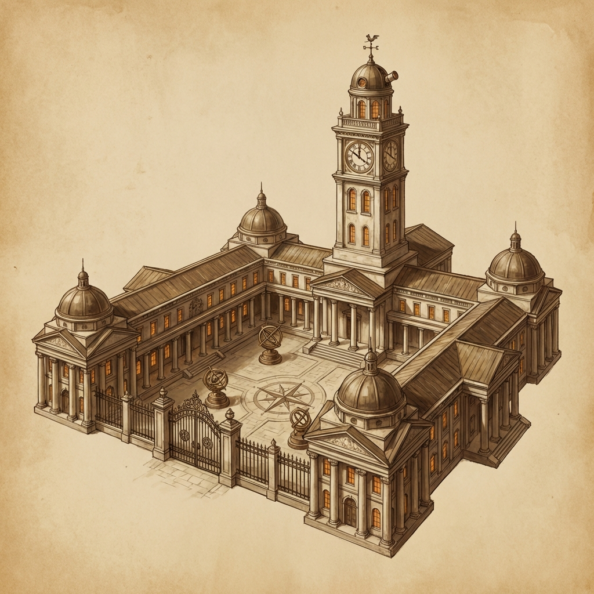

🏫 Varkenbluff University
The cosmopolitan jewel of scholarship overlooking the river delta
Overview
Varkenbluff University stands as the academic heart of the city, its towering clock spire visible from both the harbor and the mountain approaches. Founded centuries ago by maritime traders seeking to preserve navigational knowledge, the university has evolved into a world-renowned center for anthropology, archaeology, and natural philosophy.
The university maintains an exclusive partnership with the Museum of Natural History, with many faculty holding dual appointments. Field expeditions to the Murkmire and beyond are a prestigious rite of passage for advanced students.
Dr. Cassee Dannell earned her doctorate here and later joined the faculty before her disgrace over the Murkmire Stone incident.
Location
Physical Details
Exterior
Neoclassical marble architecture matching the city's refined character. The main quadrangle features a central bell tower with an astronomical clock face, surrounded by columned halls and covered walkways. Ornate iron gates bear the university crest—an open book crossed with a compass and pickaxe.
The Clock Tower
The university's defining landmark, rising 150 feet above the academic quarter. Features:
- Four-faced astronomical clock displaying time, moon phases, and tidal predictions
- Bronze bells marking academic hours
- Observatory dome at the peak for celestial navigation studies
Notable Buildings
Key NPCs
| NPC | Role | Notes |
|---|---|---|
| Dr. Cassee Dannell | Former Professor (disgraced) | Expert on the Murkmire Stone; Golden Vault ally |